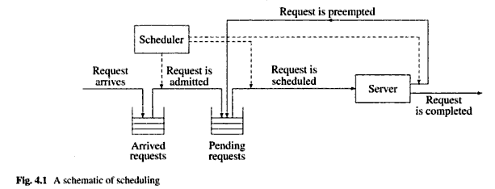

Objectives of Scheduling
Schedulers are designed to help a system perform well and make sure it behaves to designed standards.
If the implementation of the scheduler can meet some common goals then it will achieve the objectives
of satisfying performance and correct behavior.
Some common goals of schedulers are
Consistency
Schedulers should perform similar from day to day.
Throughput maximization
This is pushing though jobs as quickly as possible
Fairness to all users of the system
Not all users will be treated the same but according to the priority of the users workload it will always be responded to accordingly. High priority processes will always get the most attention. Low priority processes may stagnate under high loads.
Adequate response times
Batch users should have good turn-around time and Online / Active users should have a tolerable perceived response.
Well handled degradation of performance
If process overload occurs the system should still respond. The Scheduler should reduce the workload by preventing new processes and temporarily reduce the response time
Processor Utilization
The CPU must be kept highly utilized (busy). This is important criterion for expensive hardware to justify its cost.
Resource Utilization
The Hardware resources should be kept utilized as much as possible.
(Colin Ritchie 2003 , 4.3 Scheduling) (Er. Vivek Sharma, Er. Manish Varshney, Shantanu Sharma 2010,124)
To see an overall schematic of Scheduling please see the figure below below.
(D.M. Dhamdhere, 4.1 Preliminaries 144)